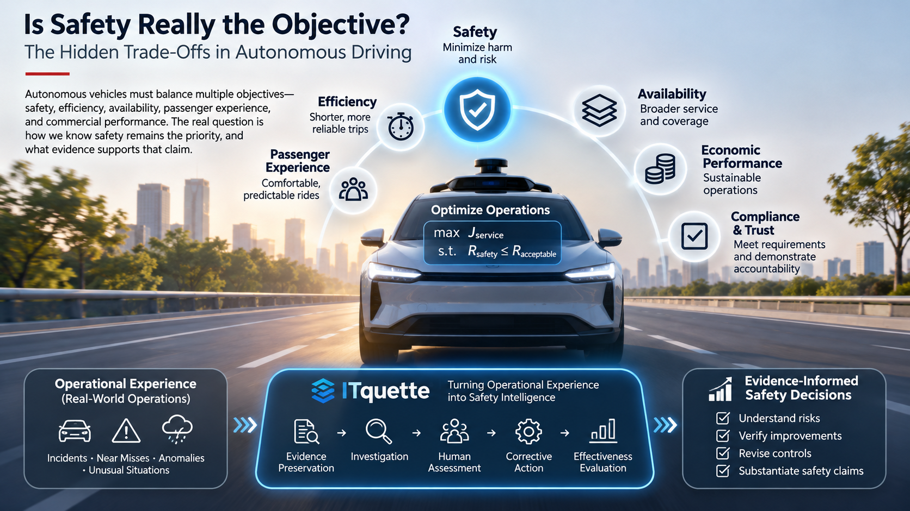

Autonomous vehicles promise safer roads. But when safety competes with efficiency, availability, and commercial performance, what ensures that safety remains the priority?
Nearly 40,000 people died on American roads in 2024. Autonomous driving offers a compelling possibility: reducing crashes associated with human distraction, impairment, fatigue, and error. That is a promise worth pursuing.
But it raises a question we should examine more carefully: When we say an autonomous vehicle is designed for safety, what exactly does that mean?
Is safety the objective the system is trying to maximize? Is it one of several competing objectives? Or is it a constraint that every other objective must respect?
These distinctions matter because a vehicle can perform exceptionally well without necessarily demonstrating that all its safety risks are understood or controlled.

1. What are autonomous vehicles actually optimizing?
An objective function describes what a system is trying to achieve. Autonomous vehicles do not operate with a single objective. Their development and deployment involve several interconnected goals:
- Safety: Minimize crashes, injuries, and unacceptable risks.
- Efficiency: Complete journeys with reasonable travel times.
- Availability: Maximize reliable service and operating coverage.
- Passenger experience: Deliver comfortable, predictable journeys.
- Economic performance: Maintain commercially sustainable operations.
- Compliance: Meet applicable requirements and support public accountability.
All are important. But they are not always compatible.
An operator might seek to reduce travel times, expand service into challenging weather, increase vehicle utilization, or lower operating costs. Each decision may improve operational performance while introducing new safety questions.
The challenge is not that these objectives exist. The challenge is how the system resolves conflicts between them.
2. Safety is different from the other objectives
A simplified multi-objective optimization model might look like:
Here, E is operational efficiency, A service availability, C customer experience, R safety risk, and the w terms represent the weights assigned to each objective.
The equation illustrates a fundamental issue. If safety is treated only as another weighted objective, a sufficiently large improvement in efficiency or availability could mathematically compensate for increased risk.
For a safety-critical system, that is not necessarily an acceptable decision framework. A more defensible formulation is:
In plain language: Optimize efficiency, availability, comfort, and profitability—but only within a justified safety envelope.
This is a conceptual model, not a claim that every AV developer uses this exact architecture. Real-world safety involves multiple hazards, operating conditions, uncertainties, and engineering safeguards. There is no universally agreed numerical threshold that, by itself, proves an AV is safe.
And it raises an even more important question: How do we know that the system is actually operating within that safety envelope?
3. The difference between safety performance and safety knowledge
Consider two autonomous vehicle operators.
Operator A reports excellent results: very few crashes, high service availability, and strong commercial growth.
Operator B reports similarly strong results but also systematically captures unusual operational events, investigates potential hazards, preserves supporting evidence, documents safety decisions, and evaluates corrective actions.
Both operators might have identical crash rates. But do they have the same understanding of their safety performance? Not necessarily.
Operator B has a stronger foundation for explaining what happened, identifying emerging risks, and evaluating whether safety interventions are effective. This does not automatically mean Operator B's vehicles are safer. It means the operator has a more complete basis for understanding and substantiating safety.
A million incident-free miles provides evidence of observed performance. It does not prove that dangerous failure modes are absent.
Similarly, an increase in reported near misses does not automatically establish that a system has become less safe. It might reflect better monitoring, more demanding operating conditions, or changes in reporting practices. Safety evidence requires context.
4. What happens when operational objectives compete?
Consider a few everyday deployment decisions:
| Decision | Operational benefit | Safety question |
|---|---|---|
| Increase vehicle speed | Shorter journeys | Are safety margins still adequate? |
| Expand into heavy rain | Greater availability | Has performance been validated in reduced visibility? |
| Reduce remote support | Lower costs | Can unusual situations still be handled safely? |
| Increase fleet utilization | Better economics | Are maintenance and monitoring controls sufficient? |
| Release a software update | Improved performance | Have new failure modes been introduced? |
These are not arguments against innovation. They demonstrate why safety cannot be treated as a development milestone that is completed before deployment.
Safety must remain an ongoing consideration throughout the operational life of the system. And that requires evidence.
A recent regulatory inquiry illustrates the distinction between implementing a fix and verifying its effectiveness. In November 2026, NHTSA opened a recall query concerning the adequacy of a Waymo software remedy addressing vehicles passing stopped school buses. The inquiry examines reported incidents after the remedy was implemented; it is not a final determination that the remedy was ineffective in every circumstance. The broader lesson is straightforward: corrective actions need post-deployment evidence of effectiveness, not simply a record of completion. NHTSA recall query RQ26006.
5. The missing connection: From operational experience to safety intelligence
A favorable crash statistic tells us something important about observed outcomes. But it does not necessarily explain why a system performed well, which hazards it encountered, what limitations remain, or whether corrective actions have worked.
Imagine an autonomous vehicle that successfully avoids several unusual pedestrian interactions without a collision. Those experiences may contain valuable safety information.
Were the interactions anticipated? Did the vehicle respond as designed? Were safety margins adequate? Did the encounters reveal a recurring weakness?
Without systematic investigation, those questions may remain unanswered.
This is where the distinction between safety performance and safety intelligence becomes important.
Safety performance tells us what happened. Safety intelligence helps us understand why it happened, what it means, and what should change.
For this process to be credible, conclusions must remain connected to their supporting evidence, uncertainties must be visible, and corrective actions must be evaluated rather than simply recorded as completed.
6. Where ITquette fits
Autonomous vehicle developers are solving extraordinarily complex problems involving perception, prediction, planning, control, and real-time decision-making.
ITquette is approaching a different but complementary problem: How can operational experience be transformed into defensible safety knowledge that supports accountability and continuous improvement?
Our mission is to strengthen the connection between operational events, evidence, investigation, human judgment, corrective action, and safety learning.
The ITquette Workbench is being developed as one practical way to support that mission. Its prototype demonstrates elements of evidence traceability, human safety review, and auditable dossier generation. Full end-to-end validation and independent evaluation remain future milestones.
This does not replace engineering validation, existing operator safety programs, or regulatory oversight. Nor can an incident-investigation platform alone establish that an autonomous vehicle is safe.
But it can contribute to a stronger evidence and accountability process. The objective is not simply to generate more incident reports. It is to make operational experience more useful for understanding and improving safety.
7. The question the industry must continue asking
Autonomous transportation will continue to optimize for efficiency, availability, passenger experience, scalability, and commercial sustainability. Those objectives are essential to making the technology useful.
But safety must be more than another favorable performance indicator. It must remain a governing consideration supported by credible, continuously evaluated evidence.
As autonomous vehicles become more capable and commercially successful, are we becoming equally capable of understanding, demonstrating, and sustaining their safety?
Because the real measure of a safety-critical technology is not only how well it performs when everything goes right. It is also how effectively we learn when something goes wrong—or almost goes wrong.
Autonomous vehicle developers optimize how vehicles drive. ITquette aims to strengthen how we know, demonstrate, and learn whether those vehicles are operating safely.
Sources and further reading
- NHTSA — 2024 traffic crash data (2024 fatality statistics).
- NHTSA — Recall Query RQ26006 (November 2026; school-bus passing and software remedy effectiveness inquiry).
Technical note: The equations are illustrative models for explaining competing objectives and constrained safety. They are not a representation of any particular AV developer's software, nor a universally accepted safety threshold.